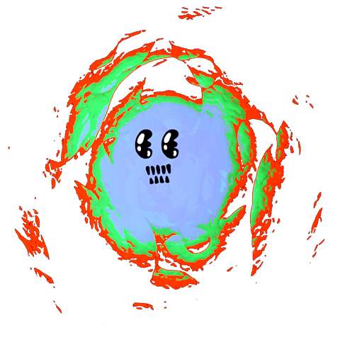

Expansion Room 2
Video installation work.
Part of group exhibition DMA::irl
Features a screen viewed upwards while on comfortable cushions designed with inspiration from my second short film, Migration.
Documentation includes the design and creation of these objects used in the installation.
The films were directed and produced by me and can be watched on my YouTube page.

Second installation of my piece for the Digital Media Art Department graduating class gallery exhibition in May 2019.
Pieces were displayed on the top floor of the Hammer Theatre Center in downtown San Jose, CA.
Due to weight limitations and room constraints this time I projected onto two 5-foot by 5-foot white canvases.
HOME
ABOUT ME